Chapter 3. 데이터베이스 시스템¶
1절. 데이터베이스 시스템 정의¶
데이터베이스 시스템(DBS : DataBase System)¶
- 데이터베이스에 데이터를 저장·관리하여 조직에 필요한 정보를 생성하는 시스템
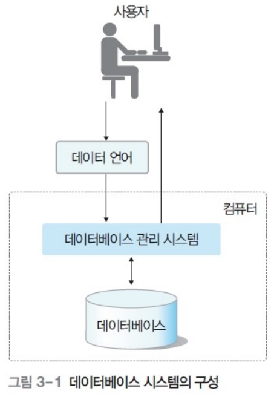
2절. 데이터베이스 구조¶
스키마(Schema)¶
- 데이터베이스에 저장된 데이터 구조·제약조건 정의
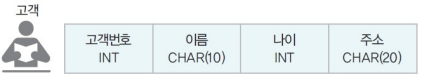
인스턴스(Instance)¶
- 스키마에 따라 데이터베이스에 실제 저장된 값
3단계 데이터베이스 구조¶
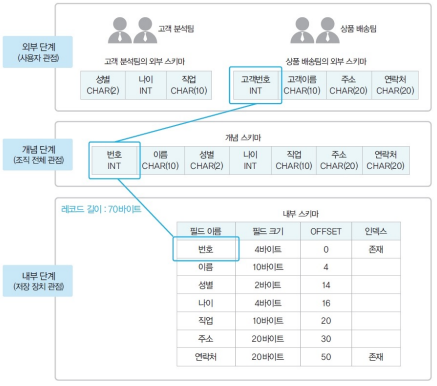 |
|
|---|---|
- 미국 표준화 기관 ANSI/SPARC에서 제안
- 데이터베이스를 관점에 따라 세 단계로 분류
- 각 단계별 다른 추상화(Abstraction) 제공
- 내부에서 외부로 갈수록 추상화 레벨 상승
| 단계 | 스키마 종류 | 설명 |
|---|---|---|
| 외부 단계 (External Level) |
외부 스키마 (External Schema) · 서브 스키마 (Sub Schema) |
1. 개별 사용자 관점에서 이해하고 표현하는 단계 2. 데이터베이스 하나에 여러 외부 스키마 존재 3. 사용자의 생각마다 데이터베이스 형태·논리적 구조 상이 |
| 개념 단계 (Comceptual Level) |
개념 스키마 (Conceptual Schema) |
1. 조직 전체 관점에서 이해하고 표현하는 단계 2. 데이터베이스 하나에 한 개의 개념 스키마 존재 3. 데이터들 간 관계·제약 조건·보안 정책·접근 권한 정의 4. 전체 데이터베이스에 어떤 데이터가 저장되는가? |
| 내부 단계 (Internal Level) |
내부 스키마(Internal Schema) | 1. 물리적인 저장 장치 관점에서 이해하고 표현하는 단계 2. 데이터베이스 하나에 한 개의 내부 스키마 존재 3. 전체 데이터베이스가 저장 장치에 실제 저장 방법 정의 4. 레코드 구조·필드 크기·레코드 접근 경로 등 물리적 저장 구조 정의 |
3단계 데이터베이스 구조의 사상 또는 매핑¶
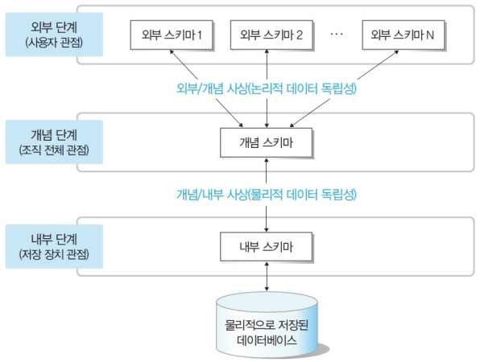
- 데이터베이스 3단계 구조로 분할
- 단계별 스키마 유지
- 스키마 사이의 대응 관계 정의 : 데이터 독립성 실현
- 미리 정의된 사상 정보로 사용자가 원하는 데이터에 접근
- 스키마 사이 대응 관계
| 인터페이스 | 사상 | 설명 |
|---|---|---|
| 응용 인터페이스 (Application Interface) |
외부/개념 사상 | 외부 스키마와 개념 스키마의 대응 관계 |
| 저장 인터페이스 (Storage Interface) |
개념/내부 사상 | 개념 스키마와 내부 스키마의 대응 관계 |
데이터베이스 구조 예시 : 수강신청 데이터베이스 구조¶
외부 스키마¶
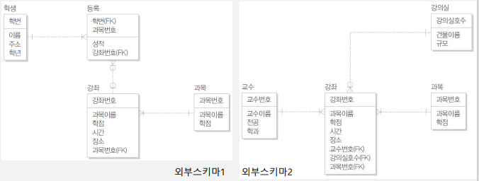
개념 스키마¶
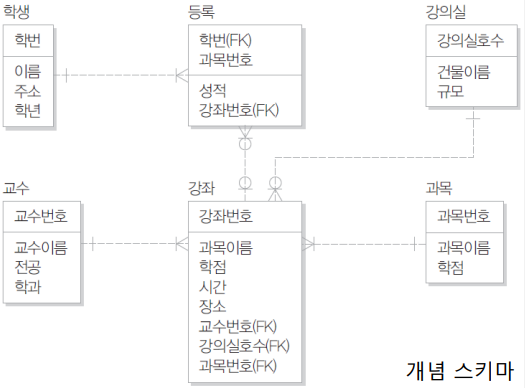
내부 스키마¶
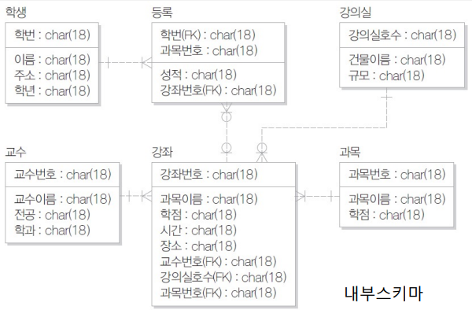
전체적인 관점¶
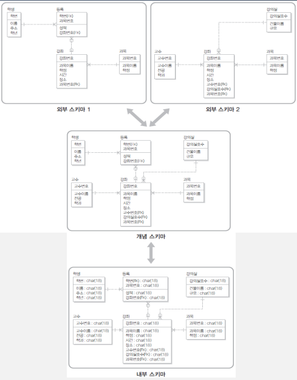
데이터 독립성(Data Independency)¶
- 하위 스키마 변경이 상위 스키마에 영향 주지 않는 특성
| 종류 | 설명 |
|---|---|
| 논리적 데이터 독립성 | 1. 개념 스키마가 변경되더라도 외부 스키마는 영향 X 2. 개념 스키마가 변경될 경우 외부/개념 사상만 정확한 수정 필요 |
| 물리적 데이터 독립성 | 1. 내부 스키마가 변경되더라도 개념 스키마는 영향 X 2. 내부 스키마가 변경될 경우 개념/내부 사상만 정확한 수정 필요 |
데이터 사전(Data Dictionary)·시스템 카탈로그(System Catalog)¶
- 데이터베이스에 저장되는 데이터에 관한 정보·메타 데이터를 유지하는 시스템 데이터베이스
- 데이터를 정확하고 효율적으로 이용하기 위해 참고해야 하는 스키마·사상 정보·다양한 제약 조건 등 저장
- 데이터베이스 관리 시스템이 스스로 생성·유지
- 일반 사용자도 접근 가능
- 저장 내용 검색만 가능
메타 데이터(Meta Data)¶
- 데이터에 대한 데이터
데이터 디렉토리(Data Directory)¶
- 데이터 사전의 데이터에 실제 접근 시 필요한 위치 정보를 저장하는 시스템 데이터베이스
- 일반 사용자 접근 비허용
사용자 데이터베이스(User DataBase)¶
- 사용자가 실제로 사용하는 데이터가 저장된 일반 데이터베이스
INFORMATION_SCHEMA¶
- MySQL 서버 내 존재하는 DB의 메타 정보(테이블·컬럼·인덱스 등의 스키마 정보)를 모아둔 데이터베이스
- 데이터베이스 내 모든 테이블은 읽기 전용
- 읽기 전용(Read-Only) : 사용자가 직접 수정 및 관여 불가능
- 단순 조회만 가능
3절. 데이터베이스 사용자¶
데이터베이스 사용자(DB User)¶
- 데이터베이스 이용을 위해 접근하는 사람
- 데이터베이스 관리자·최종 사용자·응용 프로그래머로 구분
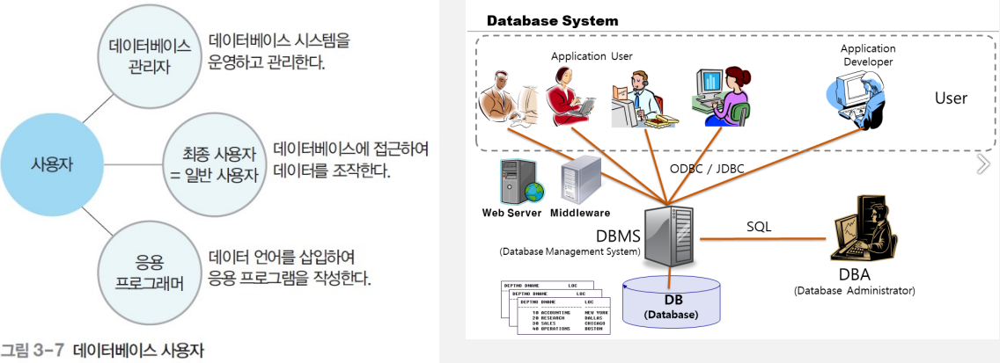
데이터베이스 관리자(DB Administrator)¶
- 데이터베이스 시스템 운영·관리자
- 데이터 정의어(DDL)·데이터 제어어(DCL) 이용
| 주요 업무 |
|---|
| 데이터베이스 구성 요소 선정 |
| 데이터베이스 스키마 정의 |
| 물리적 저장 구조·접근 방법 결정 |
| 무결성 유지를 위한 제약조건 정의 |
| 보안·접근 권한 정책 결정 |
| 백업·회복 기법 정의 |
| 시스템 데이터베이스 관리 |
| 시스템 성능 감시·분석 |
| 데이터베이스 재구성 |
최종 사용자(End User)¶
- 데이터베이스에 접근하여 데이터를 조작(삽입·삭제·수정·검색)하는 사람
- 데이터 조작어(DML) 사용
- 캐주얼 사용자·초보 사용자로 구분
응용 프로그래머(Application Programmer)¶
- 데이터 언어로 응용 프로그램을 작성하는 사람
- 데이터 조작어(DML) 사용
4절. 데이터 언어¶
데이터 언어¶
- 사용자·데이터베이스 관리 시스템 간 통신 수단
- 데이터 정의어(DDL)·데이터 조작어(DML)·데이터 제어어(DCL) 구분
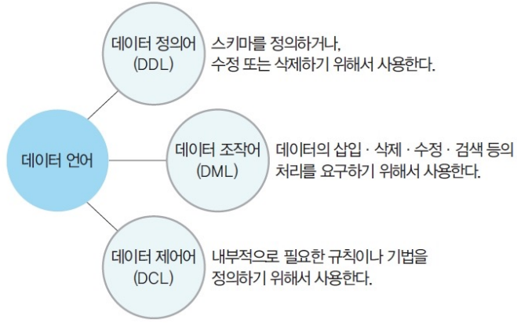
데이터 정의어(DDL : Data Definition Language)¶
- 스키마 정의·수정·삭제를 위해 사용
데이터 조작어(DML : Data Manipulation Language)¶
- 데이터 삽입·삭제·수정·검색 등 처리를 위해 사용
- 절차적 데이터 조작어·비절차적 데이터 조작어로 구분
| 종류 | 정의 | 특징 |
|---|---|---|
| 절차적 데이터 조작어 (Procedural DML) |
1. 사용자가 어떤(what) 데이터를 원하는가? 2. 그 데이터를 얻기 위해 어떻게(how) 처리해야 하는거? |
1. 한 번에 레코드 하나(one-record-at-a-time)씩 검색해서 호스트 언어와 함께 처리 2. 독자적으로 사용 불가 3. 호스트 프로그래밍 언어로 작성된 응용 프로그램 속에 삽입(embedded)되어 사용 |
| 비절차적 데이터 조작어 (Nonprocedural DML) |
1. 사용자가 어떤(what) 데이터를 원하는가? 2. 그것을 어떻게(how) 접근할 것인가? 는 명세 X |
1. 한 번에 여러 개의 레코드(set-of-record-at-a-time)를 검색해서 처리 2. 독자적으로 사용 3. 데이터 검색은 DBMS가 자체적으로 처리 4. 선언적 언어(declarative language) |
데이터 제어어(DCL : Data Control Language)¶
- 내부적 필요 규칙·기법 정의를 위해 사용
| 사용 목적 | 설명 |
|---|---|
| 무결성 | 정확·유효 데이터만 유지 |
| 보안 | 허가받지 않은 사용자 데이터 접근 차단·허가된 사용자 권한 부여 |
| 회복 | 장애 발생 시 데이터 일관성 유지 |
| 동시성 제어 | 동시 공유 지원 |
5절. 데이터베이스 관리 시스템의 구성¶
데이터베이스 관리 시스템¶
- 데이터베이스 관리·사용자 데이터 처리 요구 수행
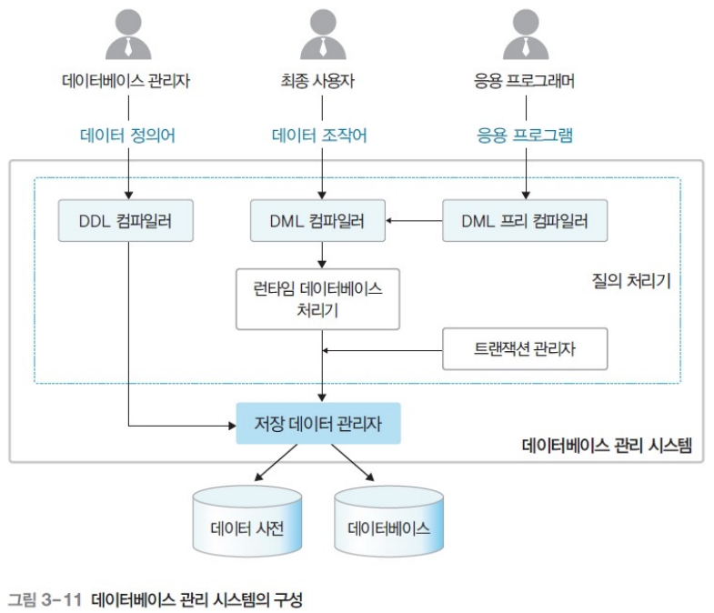
| 주요 구성 요소 | 설명 |
|---|---|
| 질의 처리기 (query processor) |
1. 사용자의 데이터 처리 요구 해석·처리 2. DDL 컴파일러·DML 프리 컴파일러·DML 컴파일러·런타임 데이터베이스 처리기·트랜잭션 관리자 등 |
| 저장 데이터 관리자 (stored data manager) |
디스크에 저장된 데이터베이스와 데이터 사전에 관리·접근 |
| DDL 컴파일러 | 1. 데이터 정의어로 작성된 스키마 정의 해석 2. 새로운 데이터베이스 구축 3. 스키마 정의를 데이터 사전에 저장 |
| DML 프리 컴파일러 | 1. 응용 프로그램에 삽입된 데이터 조작어 추출 2. DML 컴파일러에 전달 |
| DML 컴파일러 | 1. 데이터 조작어로 작성된 데이터의 처리 요구 분석 2. 런타임 데이터 베이스 처리기가 이해하도록 해석 |
| 런타임 데이터 베이스 처리기 | 1. 저장된 데이터 관리자로 데이터베이스 접근 2. DML 컴파일러로부터 전달 받은 데이터 처리 요구 |
| 트랜잭션 관리자 | 1. 사용자의 접근 권한 유효성 검사 2. 데이터 베이스 무결성 유지를 위한 제약조건 위반 여부 확인 |